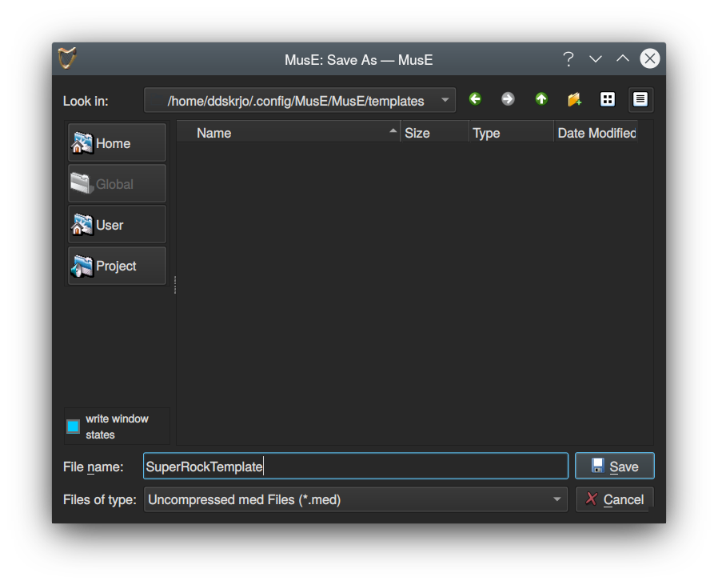
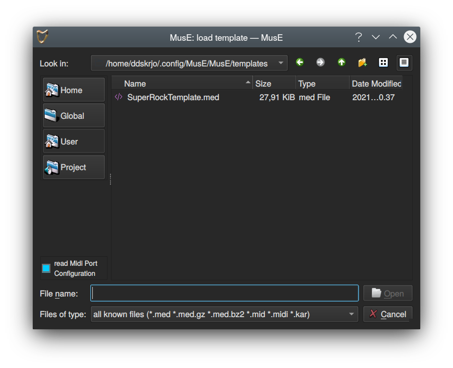

Projects
MusE projects consist of one .med file and any number of audio files, if recorded audio is used. As was noted in the quick start tutorial it is recommended to check the Create project subfolder if your projects will record audio files.
Note that this is for audio files that MusE creates, if you have external audio files that are imported into MusE it does not matter in this respect as MusE will reference the original wave file location. To make your project portable and more easy to backup it is however a good idea to put imported wave files in the project folder too, before importing them.
MusE will create projects under the global project folder, which initially is $HOME/MusE. It will be created if it does not exist. So, as an example, if a project named GreatSong is created with the subfolder option checked the path to the .med file will be $HOME/MusE/GreatSong/GreatSong.med. Furthermore any audio files that MusE creates will be placed in the $HOME/MusE/GreatSong folder.
The Global project folder can be changed from within the New project dialog.
Templates
After you have begun to have a deeper understanding on how you prefer to work with MusE you may find that there are certain configuration parameters that always want to have. For instance, always create Input tracks for all your physical inputs on your sound card, or maybe create some instances of your favourite soft synths that you always use a bunch of. This can be achieved in MusE by creating templates.
Startup templates
Infact MusE always uses templates. By default when MusE is started a template called default.med is loaded, this template contains only an Output track which should be connected to the sound card, if a sound card exists.
In the Settings->Global Settings dialog under the Application tab the startup template can be changed to any template that exists on your system.
Creating templates
To create a template for a specific use-case, simply configure the things that you want to have pre-setup in your projects as you usually would when making a song, but before you start actually creating music select File->Save As Template and give the template a descriptive file name and save it in the selected folder.

Note: It is not against the rules to actually add music to a template, by all means do if you have a specific use-case, but for most people it probably does not belong there
Use templates
The File->New from Template… will show a list of available templates. By default the dialog will show templates from the Global view, which are some templates bundled with MusE as examples. Clicking on the User button will display the template that was just created.
